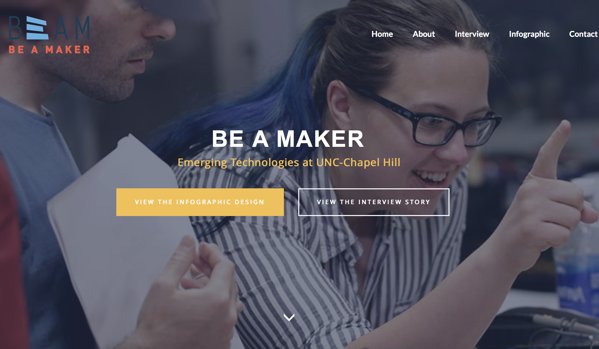
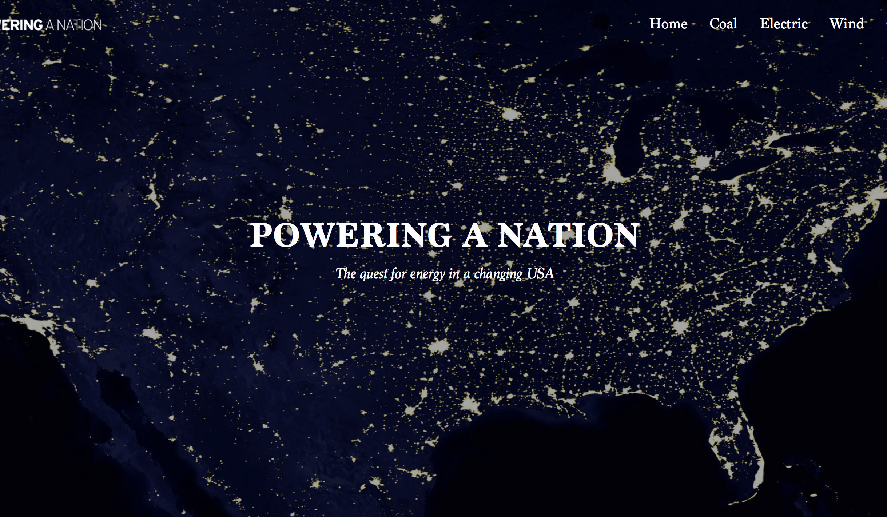

iBallot
Entrepreneurship, Prototyping
iBallot is a pre-startup project I am working on in Reese News Lab at UNC School of Media and Journalism. Identifying the problem of low turn out rate of young voters, aged 18 to 24, in local and state election, I, partnered...

Pusheen’s Credit Card Marketplace
UI/UX, Front-end Development

Be A Maker
Web Development, Video, Graphic Design
This is a semester-long project for my Introduction to Digital Storytelling class at the School of Media and Journalism of UNC-Chapel Hill. Through learning different media technology skills needed to engage in multimedia storytelling...

Powering A Nation
UI/UX Design, Web Development
The goal of this project to create a well-designed, easy-to-navigate, flawlessly scripted multi-page website for Powering A Nation. I created the wireframes, designed the mockups and coded it in HTML and CSS. There are five pages in this site...
